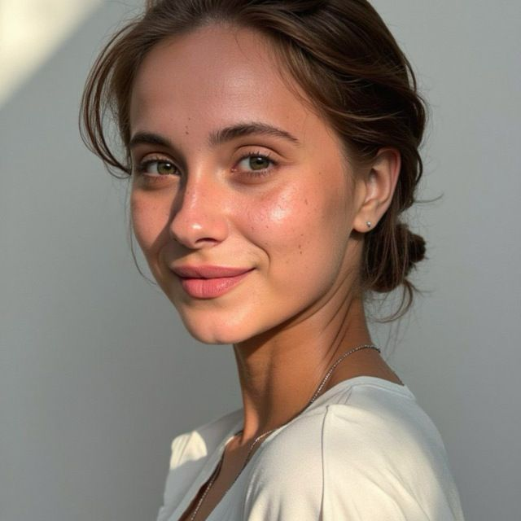

О курсе
В первый день нашего курса мы проведем теоретическую часть – лекции, а во второй день – практические занятия. Лекции будет вести Екатерина Белицкая – успешный блогер и SMM-специалист.
О лекторе:
- Действующий блогер в TikTok: один аккаунт – 1,8 млн подписчиков, другой – 18 тыс. подписчиков.
- В Instagram – 26 тыс. подписчиков (набор за два месяца).
- Формат контента: юмористические пранки на английском языке (опыт более 3 лет).
- Бывшая телеведущая «Кубань 24».
- SMM-специалист, продвигающий бренды и компании, помогая развивать как собственный блог, так и проекты других.
Теоретическая часть
На лекциях вы узнаете:
- Как выбрать площадки для ведения блога (Instagram, YouTube, TikTok, ВКонтакте и др.).
- Как определиться с форматом: личный блог или бизнес-аккаунт, выбрать нишу и поставить цели.
- Актуальные тренды и алгоритмы платформ: что сейчас в моде, как работают алгоритмы и стоит ли дублировать контент.
- Оптимальный хронометраж роликов, сколько видео выкладывать в день и месяц для быстрого достижения результатов.
- Методы измерения эффективности: как отслеживать статистику, использовать профессиональные панели и анализировать показатели.
- Возможности монетизации на разных площадках и как начать получать регулярные выплаты за контент.
- Как определить целевую аудиторию, составить контент-план и написать сценарии для коротких и длинных роликов.
- Различия между форматами видео, виды рекламы, сотрудничество с блогерами, пабликами и особенности таргетинга.
- Рекомендации по выбору техники для съемки, монтажу, использованию приложений для редактирования и созданию привлекательного контента.
- Как правильно оформить профиль: выбор никнейма, использование хэштегов, создание обложек для роликов.
- Методы продвижения, анализ конкурентов, подбор трендов и внедрение их под вашу тематику и стиль.

Практическая часть
На втором дне курса мы перейдём к практическим занятиям:
- Изучение видов мобильной съемки и техники скрытой съемки для пранков.
- Как создавать качественный контент даже с помощью смартфона: рекомендации по освещению, петличным микрофонам и звуковым настройкам.
- Основы монтажа коротких видеороликов: хуковые фразы (лиды), хронология монтажа, создание динамичных вступлений и эффектных переходов.
- Работа с субтитрами: автоматическая генерация и ручное редактирование, основы цветокоррекции и применения фильтров.
- Сценарии для коротких роликов: как писать сценарии, придумывать идеи и снимать их самостоятельно или дистанционно.
- Блок по развитию бизнеса в соцсетях: стратегии продвижения для малого и крупного бизнеса, выбор формата и тематики контента.

Контакты
Если у вас есть вопросы или вы хотите записаться на курс, свяжитесь с нами:
Email: info@example.com
Телефон: +7 (123) 456-78-90